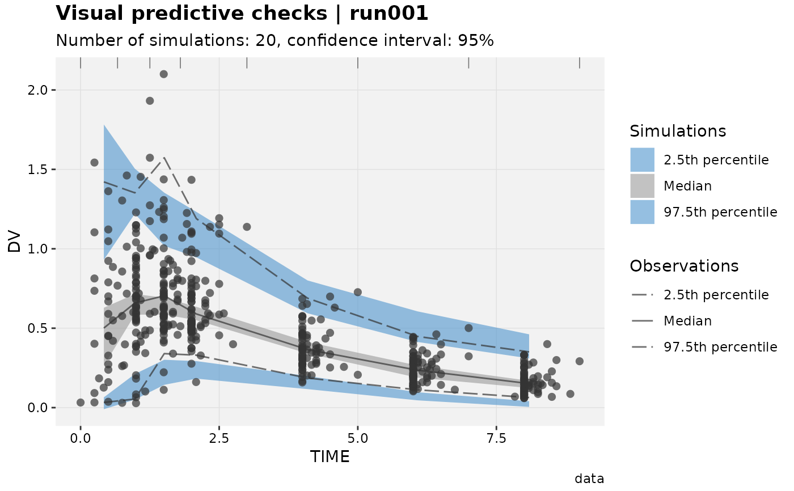

Generate visual predictive checks (VPC)
vpc(
xpdb,
vpc_type = NULL,
mapping = NULL,
smooth = TRUE,
type = "alpr",
title = "Visual predictive checks | @run",
subtitle = "Number of simulations: @vpcnsim, confidence interval: @vpcci%",
caption = "@vpcdir",
tag = NULL,
log = NULL,
guide = TRUE,
gg_theme,
xp_theme,
facets,
quiet,
area_fill = c("steelblue3", "grey60", "steelblue3"),
line_linetype = c("93", "solid", "93"),
...
)An xpose database object.
Only used when multiple vpc data are present in the same xpdb. The type of vpc to be created. Can be one of can be one of: 'continuous', 'categorical', 'censored' or 'time-to-event'.
List of aesthetics mappings to be used for the xpose plot
(e.g. point_color).
Should the bins be smoothed (connect bin midpoints, default) or shown as rectangular boxes.
String setting the type of plot to be used. Can be points 'p', line 'l', area 'a', rug 'r' and text 't' or any combination of the five.
Plot title. Use NULL to remove.
Plot subtitle. Use NULL to remove.
Page caption. Use NULL to remove.
Plot identification tag. Use NULL to remove.
String assigning logarithmic scale to axes, can be either '', 'x', y' or 'xy'.
Enable guide display in vpc continuous (e.g. lloq and uloq lines).
A complete ggplot2 theme object (e.g.
theme_classic), a function returning a complete
ggplot2 theme, or a change to the current gg_theme.
A complete xpose theme object (e.g.
theme_xp_default) or a list of modifications to the current
xp_theme (e.g. list(point_color = 'red', line_linetype =
'dashed')).
Either a character string to use facet_wrap or a formula to use facet_grid.
Logical, if FALSE messages are printed to the console.
Shaded areas filling color, should be a vector of 3 values (i.e. low, med, high).
Lines linetype, should be a vector of 3 values (i.e. low, med, high).
any additional aesthetics.
Plots can be customized by mapping arguments to specific layers. The naming convention is layer_option where layer is one of the names defined in the list below and option is any option supported by this layer e.g. point_color = 'blue', area_fill = 'green', etc.
point: options to geom_point
line: options to geom_line
area: options to geom_ribbon (smooth = TRUE) or geom_rect (smooth = FALSE)
rug: options to geom_rug
text: options to geom_text
guide: options to geom_hline
xscale: options to scale_x_continuous or scale_x_log10
yscale: options to scale_y_continuous or scale_y_log10
Every xpose plot function has built-in faceting functionalities. Faceting arguments
are passed to the functions facet_wrap_paginate when the facets
argument is a character string (e.g. facets = c('SEX', 'MED1')) or
facet_grid_paginate when facets is a formula (e.g. facets = SEX~MED1).
All xpose plot functions accept all the arguments for the facet_wrap_paginate
and facet_grid_paginate functions e.g. dv_vs_ipred(xpdb_ex_pk,
facets = SEX~MED1, ncol = 3, nrow = 3, page = 1, margins = TRUE, labeller = 'label_both').
Faceting options can either be defined in plot functions (e.g. dv_vs_ipred(xpdb_ex_pk,
facets = 'SEX')) or assigned globally to an xpdb object via the xp_theme (e.g. xpdb
<- update_themes(xpdb_ex_pk, xp_theme = list(facets = 'SEX'))). In the latter example all plots
generate from this xpdb will automatically be stratified by `SEX`.
By default, some plot functions use a custom stratifying variable named `variable`, e.g.
eta_distrib(). When using the facets argument, `variable` needs to be added manually
e.g. facets = c('SEX', 'variable') or facets = c('SEX', 'variable'), but is optional,
when using the facets argument in xp_theme variable is automatically added whenever needed.
Template titles can be used to create highly informative diagnostics plots.
They can be applied to any plot title, subtitle, caption and tag. Template titles
are defined via a single string containing key variables staring with a `@` (e.g. `@ofv`)
which will be replaced by their actual value when rendering the plot.
For example `'@run, @nobs observations in @nind subjects'` would become
`'run001, 1022 observations in 74 subjects'`. The available key variables
are listed under template_titles.
xpdb_ex_pk %>%
vpc_data(opt = vpc_opt(n_bins = 7)) %>%
vpc()
#>
#> VPC continuous --------------------
#> 1. Gathering data & settings
#> Using xpdb simulation problem 2 and observation problem 1.
#>
#> 2. Computing VPC data
#> Configuring and initializing...
#> Parsing observed data...
#> Filtering rows where EVID not 0
#> Parsing simulated data...
#> Filtering rows where EVID not 0
#> Binning: 0 0.66667 1.25 1.8 3 5 7 9
#> Calculating statistics for simulated data...
#> Calculating statistics for observed data...
#>
#> VPC done
